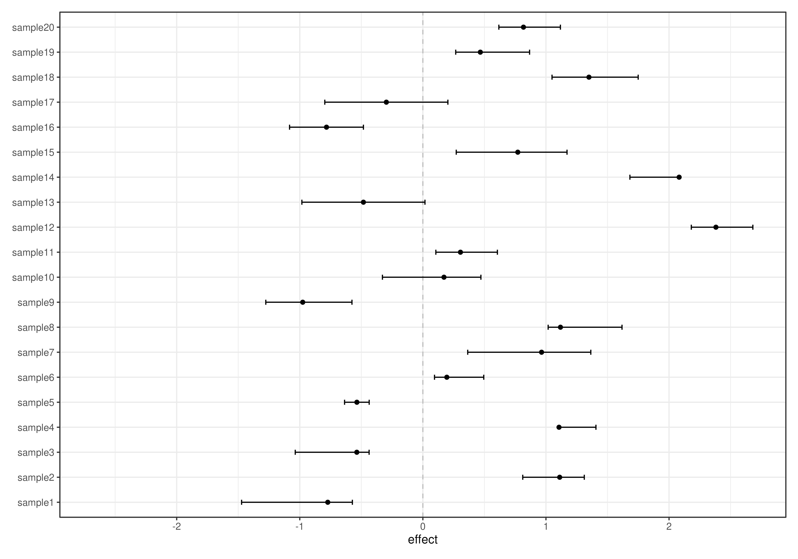
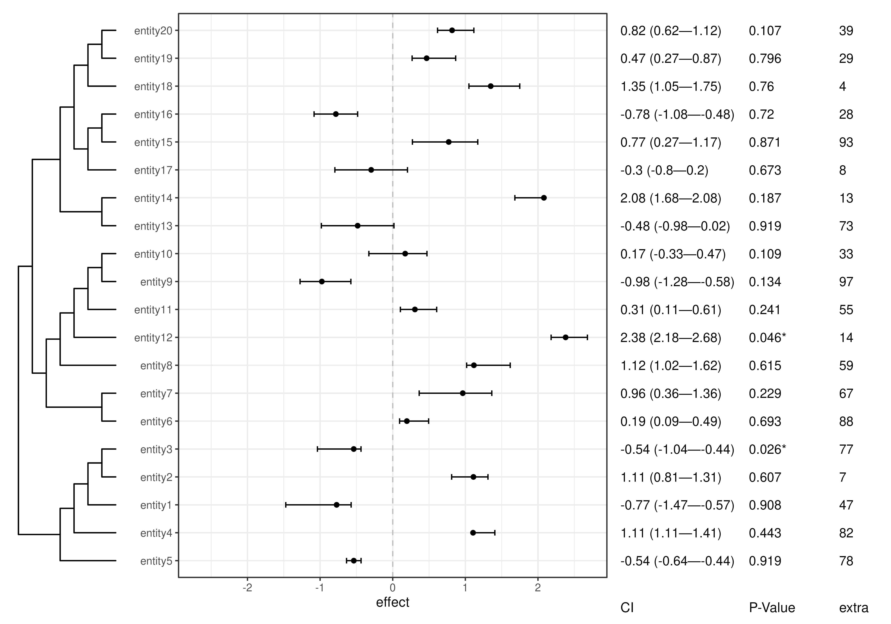
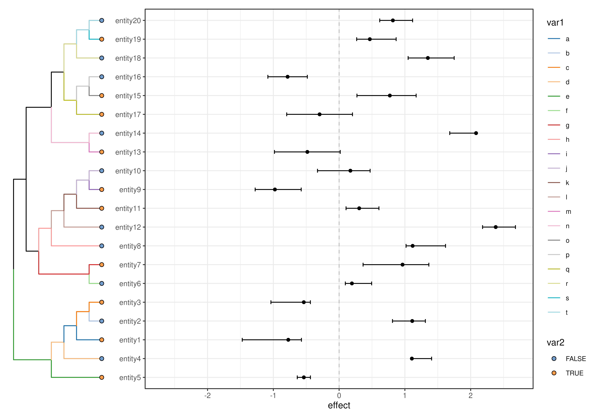
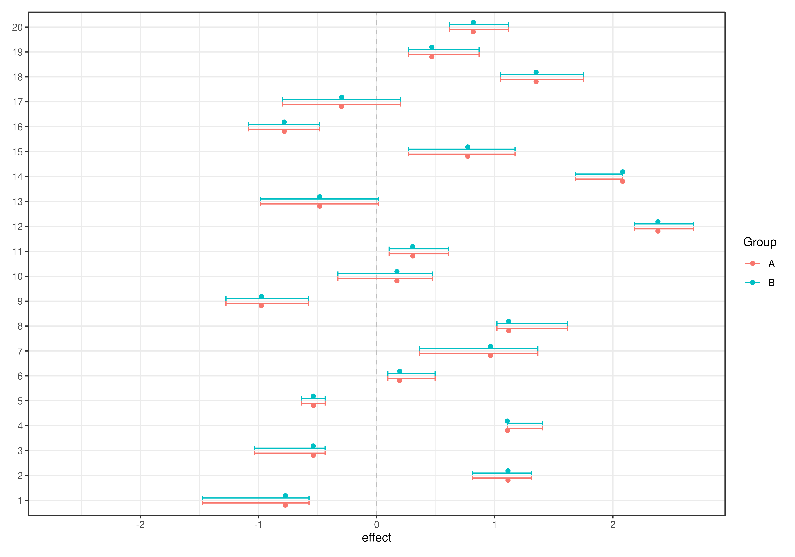

plotForest() creates a feature- or sample-wise forest plot, showing
estimated results from a statistical test with their confidence intervals.
Additionally, the plot can be enriched with the tree structure and labelled
with Confidence Intervals (CIs), p-values and other side information.
plotForest(
x,
by = 1L,
effect.var = "effect",
id.var = "rownames",
ci.lower.var = "lower",
ci.upper.var = "upper",
pval.var = "pval",
label.by = NULL,
color.by = colour.by,
colour.by = NULL,
show.tree = TRUE,
...
)
# S4 method for class 'SummarizedExperiment'
plotForest(
x,
by = 1L,
effect.var = "effect",
id.var = "rownames",
ci.lower.var = "lower",
ci.upper.var = "upper",
pval.var = "pval",
label.by = NULL,
color.by = colour.by,
colour.by = NULL,
show.tree = TRUE,
...
)
# S4 method for class 'data.frame'
plotForest(
x,
effect.var = "effect",
id.var = "rownames",
ci.lower.var = "lower",
ci.upper.var = "upper",
pval.var = "pval",
label.by = NULL,
color.by = colour.by,
colour.by = NULL
)Arguments
- x
a
SummarizedExperimentobject, or adata.frameobject containing statistical estimates.- by
Character scalar. Determines whether features or samples data is used for the plot. (Default:"rows")- effect.var
Character scalar. Specifies the variable of x which corresponds to the effects or estimated results. (Default:"effect")- id.var
Character scalar. Specifies the variable of x which corresponds to the observation identifiers. When"rownames"), the object rownames are used. (Default:"rownames")- ci.lower.var
Character scalar. Specifies the variable of x which corresponds to the lower CI boundaries. (Default:"lower")- ci.upper.var
Character scalar. Specifies the variable of x which corresponds to the upper CI boundaries. (Default:"upper")- pval.var
Character scalar. Specifies the variable of x which corrsponds to the p-values associated witheffect.var. (Default:"pval")- label.by
Character vector. Specifies the variables of x or row/colData(x) by which the plot should be labelled."CI"and"P-Value"are special entries which require eithereffect.var,ci.lower.varandci.upper.varorpval.varto be specified, respectively. (Default:NULL)- color.by
Character scalar. Alias tocolour.by.- colour.by
Character scalar. Specifies the variable of x by which observations are coloured. (Default:NULL)- show.tree
Logical scalar. Should the tree structure of the data be shown next to the forest plot?- ...
additional parameters passed to
plotRowTree.
Value
a ggplot object.
Examples
# Make toy data
tse <- makeTSE(nrow = 20L, ncol = 20L)
# Make toy stats
est <- rnorm(nrow(tse), mean = 0)
conf.lower <- est - 0.1 * rpois(length(est), lambda = 3)
conf.upper <- est + 0.1 * rpois(length(est), lambda = 3)
p.val <- runif(est)
extra <- sample(100, length(est))
# Compile into df
df <- data.frame(
effect = est,
lower = conf.lower,
upper = conf.upper,
pval = p.val,
extra = extra
)
# Make forest plot from stats data.frame
plotForest(df)
 # Colour by a variable
plotForest(df, colour.by = "extra")
# Colour by a variable
plotForest(df, colour.by = "extra")
 # Add stats to side information
rowData(tse) <- cbind(rowData(tse), df)
colData(tse) <- cbind(colData(tse), df)
# Make feature-wise forest plot
plotForest(
tse,
by = "features",
show.tree = TRUE
)
#> Warning: Tree includes ununique nodes. Making them unique.
#> Warning: `aes_string()` was deprecated in ggplot2 3.0.0.
#> ℹ Please use tidy evaluation idioms with `aes()`.
#> ℹ See also `vignette("ggplot2-in-packages")` for more information.
#> ℹ The deprecated feature was likely used in the miaViz package.
#> Please report the issue at <https://github.com/microbiome/miaViz/issues>.
#> Warning: Tree includes ununique nodes. Making them unique.
# Add stats to side information
rowData(tse) <- cbind(rowData(tse), df)
colData(tse) <- cbind(colData(tse), df)
# Make feature-wise forest plot
plotForest(
tse,
by = "features",
show.tree = TRUE
)
#> Warning: Tree includes ununique nodes. Making them unique.
#> Warning: `aes_string()` was deprecated in ggplot2 3.0.0.
#> ℹ Please use tidy evaluation idioms with `aes()`.
#> ℹ See also `vignette("ggplot2-in-packages")` for more information.
#> ℹ The deprecated feature was likely used in the miaViz package.
#> Please report the issue at <https://github.com/microbiome/miaViz/issues>.
#> Warning: Tree includes ununique nodes. Making them unique.
 # Quick fix for a colTree error
colTree(tse) <- NULL
# Make sample-wise forest plot
plotForest(
tse,
by = "samples",
show.tree = FALSE
)
# Quick fix for a colTree error
colTree(tse) <- NULL
# Make sample-wise forest plot
plotForest(
tse,
by = "samples",
show.tree = FALSE
)

# Add labels
plotForest(tse, label.by = c("CI", "P-Value", "extra"))
#> Warning: Tree includes ununique nodes. Making them unique.
#> Warning: Tree includes ununique nodes. Making them unique.

# Select tree and adjust its aesthetics
plotForest(
tse,
tree.name = "phylo",
edge.colour.by = "var1",
tip.colour.by = "var2"
)
#> Warning: Tree includes ununique nodes. Making them unique.
#> Warning: Tree includes ununique nodes. Making them unique.

# Make toy grouped data
df <- as.data.frame(colData(tse))
df2 <- rbind(df, df)
df2$Group <- c(rep("A", nrow(df2) / 2), rep("B", nrow(df2) / 2))
# Make paired forest plot
plotForest(df2, id.var = "ID", colour.by = "Group")
